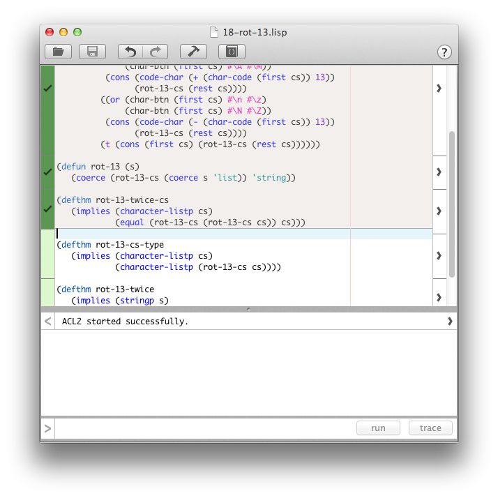
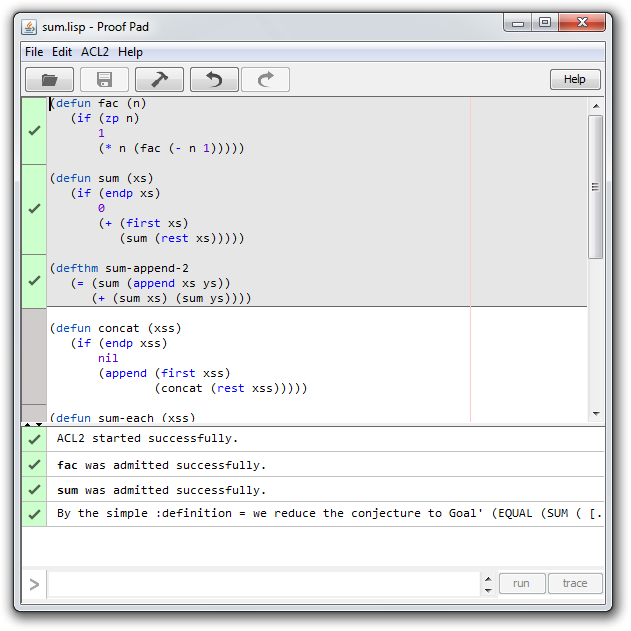
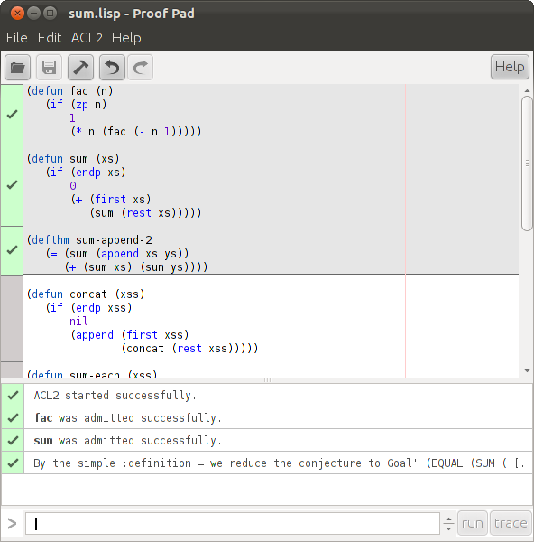

Proof Pad
Proof Pad
Proof Pad is a modern integrated development environment for
ACL2
. It's under active development. Please report any bugs you find on
Github
or
email the developer
.
⇓ Download
for OS X
⇓ Download
for Windows (32-bit)
⇓ Download
for Windows (64-bit)
⇓ Download
for Linux
Show other platforms
Screenshots
  
Icon based on
an image
by
Deutsche Fotothek
. Used under the Creative Commons
Attribution-ShareAlike 3.0 Germany
license.